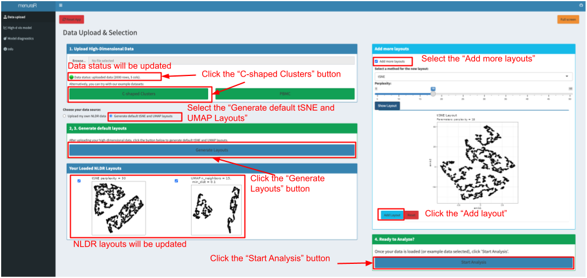
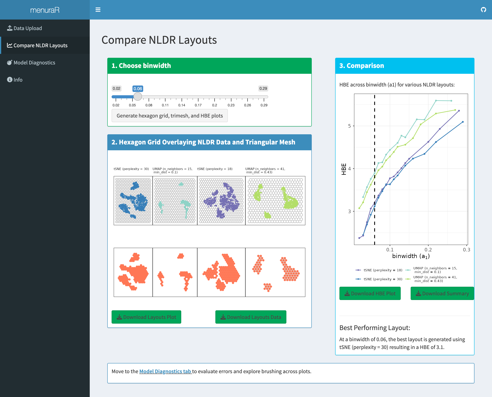
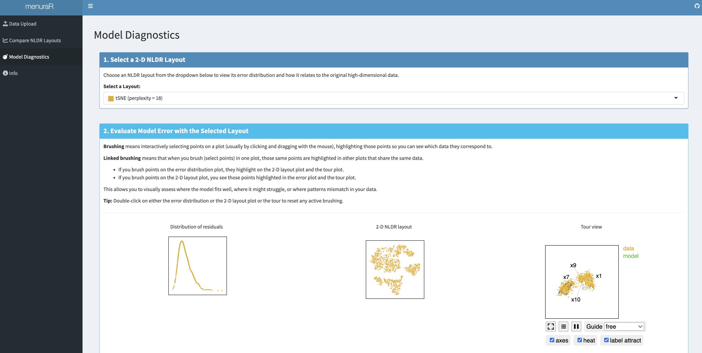

6 Development of an interactive and dynamic graphics system for NLDR users
6.1 Introduction
Non-linear dimensionality reduction (NLDR) methods such as tSNE (Maaten and Hinton (2008)) and UMAP (McInnes et al. (2018)) have become essential tools for exploring and visualizing high-dimensional data across diverse scientific disciplines. These techniques enable researchers to uncover structures, clusters, and patterns that are not immediately visible in the original feature space. However, the flexibility and power of these methods come with challenges: the quality and interpretability of low-dimensional embeddings are often highly sensitive to hyper-parameter choices, random initialization, and characteristics of the underlying data. As a result, identifying the most meaningful and faithful representation typically requires iterative experimentation, systematic evaluation, and domain expertise.
To address these challenges, we introduce menuraR (monitoring embeddings of nonlinear unfoldings for representation and analysis in R), an interactive Shiny application created to facilitate the evaluation of NLDR layouts. Building on the functionality of the quollr R package ((jayani2025?)), menuraR provides a graphical user interface that enables users to compare multiple NLDR layouts, explore the effects of different hyper-parameter settings, and apply diagnostic tools for evaluating NLDR layout(s).
These capabilities are delivered through an intuitive interface that eliminates the need for programming, thereby lowering the technical barrier for applied researchers, students, and methodologists.
A key advantage of menuraR is its accessibility. The application is fully web-based, requiring no local installation of R or package management. Centralized hosting ensures that users always access the most up-to-date version, while reproducibility is supported through logging and open availability of the underlying code. In this way, menuraR enhances transparency in NLDR evaluation and fosters broader adoption of rigorous visualization practices.
This paper introduces version 0.1.0 of menuraR, outlining its implementation, core features, and intended use cases. We demonstrate how the application can inform NLDR choices, highlight key visual diagnostics, and support both exploratory data analysis and teaching.
6.2 Implementation
The menuraR application is implemented in the R programming language using the shiny package ((winston2025a?)), which provides the reactive programming framework needed for building interactive web applications. The front end integrates functionality from htmltools ((joe2024?)) to dynamically render markdown documentation within the application, ensuring that explanatory material and usage guidance are seamlessly incorporated alongside interactive elements. To enhance usability, the application employs shinycssloaders ((dean2024?)), which provides responsive loading animations during long-running computations.
From an architectural perspective, menuraR is structured around a separation between the user interface (UI) and the computational back end. The UI components: buttons, menus, and plotting panels are rendered through Shiny’s reactive layer, which updates outputs in real time in response to user interactions. Computational tasks, such as fitting tSNE (Krijthe 2015) or UMAP (james2025?) embeddings, are delegated to the R back end and are executed primarily through functions provided by the quollr package ((jayani2025?)). This modular design ensures that new dimensionality reduction methods or diagnostics can be incorporated with minimal changes to the user-facing interface.
For deployment, menuraR is hosted on the shinyapps.io platform, a managed, cloud-based service that supports full R integration. This allows users to run the application directly from any modern web browser without the need to install additional software or manage dependencies locally. The hosted version currently supports the generation of NLDR layouts using tSNE and UMAP, leveraging implementations in the R ecosystem.
This design supports accessibility, reproducibility, and extensibility. Accessibility is achieved through a web-based interface that eliminates the need for local installation. Reproducibility is ensured by maintaining a consistent server-side computational environment across sessions. Extensibility follows from the modular linkage between the Shiny interface and the quollr computational back end, which fits model(s) for the NLDR layout(s), computes RWBSS for different binwidths, visualizes the model and generates diagnostics without altering the core interface.
6.3 The Shiny application
The menuraR app contains four main three tabs: (1) Data Upload, (2) Compare NLDR Layouts, and (3) Model diagnostics. Each tab includes numbered steps and clear instructions, guiding users from data input to interpretation of results.
Data upload
Analysis in menuraR begins in two ways: by uploading user-provided high-dimensional data or by using one of the built-in example datasets. Two datasets are provided within the application: C-shaped Clusters, a synthetic dataset illustrating nonlinear structure, and PBMC, a biological single-cell dataset for real-world exploration (rahul2025?). If the user uploads own high-dimensional data, the file should be a CSV and the CSV must have a unique ID column, with data columns prefixed by the letter “x” (e.g., x1, x2, etc.).
Once the high-dimensional data uploaded, under “choose your data source”, users can specify their data source: “Upload your own data”, or “Generate default tSNE and UMAP layouts”. Selecting Upload your own NLDR data activates the uploaded NLDR layouts and metadata for comparison. The NLDR file is a CSV file of pre-computed NLDR, which contains embedding data must be labeled as emb1 and emb2, and each layout should have its columns named with a prefix corresponding to the layout number, such as 1_emb1 and 1_emb2 for the first layout. Also, the meta data CSV file includes the NLDR layout name (e.g., 1, 2, etc.), the method used (like UMAP or tSNE), and any hyper-parameters formatted with the parameter name followed by its value, separated by a dash (e.g., perplexity-30 for tSNE). All uploaded files must be under 100 MB in size, and it is essential that each dataset follows the variable naming conventions required by the web application. Alternatively, users may choose Generate default tSNE and UMAP layouts, in which case the application automatically computes two embeddings using default hyper-parameter settings for tSNE and UMAP.
Once loaded, all available NLDR layouts appear in the “Your Loaded NLDR Layouts” box. Users can select or deselect specific layouts to include in the comparison.
Adding additional layouts
The application also allows users to generate additional layouts directly within the interface. Users select the NLDR method (tSNE or UMAP), specify hyper-parameters, and click “Show Layout” to generate the embedding. If satisfied, they can add it to the comparison using “Add Layout”; otherwise, they may adjust the parameters and regenerate the layout. Multiple additional layouts can be created and compared in this manner.
Once the desired layouts are finalized, users click “Start Analysis” to proceed automatically to the next tab, Compare NLDR Layouts, where the evaluation and comparison of embeddings take place.
Compare NLDR Layouts
Users can view the 2\text{-}D NLDR layouts that have been selected to compare. The app also generates a plot showing the Root Within Bin Sum of Square (RWBSS) against the bandwidth parameter (a_1) and identifies the “best” representation that yields the lowest RWBSS for that specific a_1. Users can modify the a_1 value to see what layout performs best for the chosen bandwidth.
Furthermore, users have the option to download the 2\text{-}D layouts, corresponding data, the RWBSS versus bin width plot, and the summary table, which contains error, RWBSS, the number of bins along the x-axis (b1), the number of bins along the y-axis (b2), the total number of bins (b), the number of non-empty bins (m), the bin width (a_1), the bin height (a_2), standardized bin counts (w_h), and NLDR method id.

Model diagnostics
Once the best representation is selected, interactive plots are generated to display the high-dimensional model error, the best 2\text{-}D layout, and a tour view of the model overlaying the high-dimensional data. This interactivity allows users to identify where the model fits well, where it better in some subspaces, and where it fails to match the data. Additionally, users can explore the mapping between the 2\text{-}D layout and the high-dimensional data. Importantly, model diagnostics are not limited to the best NLDR layout; other layouts can also be selected and examined for comparison.

6.4 Limitations
Currently, menuraR supports two NLDR methods tSNE and UMAP executed within the R environment on shinyapps.io. Performance may vary depending on dataset size and browser memory limits, as computations are handled server-side.
6.5 Conclusions
This paper introduces menuraR, a web-based interface designed to assist in the evaluation and selection of the most reasonable NLDR layout(s). Although NLDR methods such as tSNE, and, UMAP are widely used for visualizing high-dimensional data, interpreting and selecting the most representative layout can be complex. menuraR addresses this challenge by providing an accessible, intuitive, and interactive environment that encapsulates the diagnostic features of the quollr package, making assistant in NLDR selection feasible for users with varying levels of technical expertise.
Developed using the R Shiny framework, menuraR eliminates many of the technical barriers traditionally associated with advanced statistical software. Users do not need to install additional packages or configure language-specific environments, which is particularly valuable for interdisciplinary research teams and educational settings. The platform allows for comparisons of layouts, visual diagnostics, and selection criteria.
6.6 Availability
The source code for the Shiny application can be found at github.com/JayaniLakshika/menuraR. Users can access the web interface at menurar.netlify.app.
6.7 Supplementary material
All the materials to reproduce the paper can be found at github.com/JayaniLakshika/paper-menuraR.